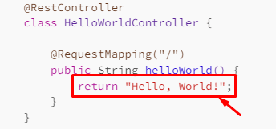

When a computer is connected to the world wide web, it has both an input ability and output. This is done through a network card which handles input/output(IO for short).
This network card handles all IO. The network card also has its own IP address. So, imagine, if you have two network cards on one PC you can have two IP adresses.
Each network card divides all IO into 50,000+ independent IO connections. Think as if they were individual wires, but done programmatically.
You can post any software that uses these independent IO connections on your network card. We will call these 50,000+ independent IO connections ports.
So, there are 50,000+ ports on each network card.
All a website is, is a piece of software running on a computer through its network card. By standard, these network cards are available on every device connected to the internet. So, technically you can run a website on any device with this function. This includes, phones, tablets, laptops, etc.
The website runs on the computer but connects to the internet through the network card.
When you setup this software/website on a network card, you have to assign it a port. Why? No other reason than standard. This is just how us human arbitrarily built computer networks.
Well, the reason was security and utility, but in the end it was up to us. With multiple ports, if you wanted to hack software you would have to play multiple guess as to which port it is on. In addition, with 50,0000+ individual IO connections we can have 50,0000+ software on 1 computer, which is pretty cool.
How a Website Listens for Incoming Connections
So, we have the website on a port. How in the world does it accept other device connections? Take a look at this pseudo code.
import socket
# Create a socket
server_socket = socket.socket(socket.AF_INET, socket.SOCK_STREAM)
# Bind the socket to the host and port
server_socket.bind(('127.0.0.1', 8080))
data = None
while True: # always listens
if server_socket.check_connection():
data = serversocket.read(1024)
#Do something
do_something_with(data)
server_socket.close()In short, the website listens for incoming connections by using a loop. It uses something like a while loop, to constantly check and recheck if anything comes in.
This is how all input & output works. It is done through finite loops. Though all your computing seems instantaneous, I guarantee its running on some crazy loop or group of loops.
Each input device you use has an electric current running through, programmed to listen by a loop. Every key you press, every mouse movement you commit to uses a loop.
Even your CPU's speed is measured in how quickly it can loop, it is measured in hertz, which is how many times it loops. 1GHz is 1 billion loops per second btw.
So, this implementation method of listening, this loop, is done on every piece of software. Your website, this website is using it to listen for all connections.
Every language does the same thing. Take a look at two examples:
from flask import Flask
app = Flask(__name__)
@app.route('/')
def hello_world():
return 'Hello, World!'
if __name__ == '__main__':
app.run()@SpringBootApplication
public class HelloWorldApplication {
public static void main(String[] args) {
SpringApplication.run(HelloWorldApplication.class, args);
}
}
@RestController
class HelloWorldController {
@RequestMapping("/")
public String helloWorld() {
return "Hello, World!";
}
}Notice, you see that "run()" function in both of those implementations? Those are the loops. It is essentially looping through a port and waiting for the next connection, the user, you.
The Request Response Model
When the connection is made, there is a sort of formal way HTTP requests are created. The HTTP connection, by the web user, sends a request to access data. The website or software then creates a response. This is known as the request response model.
It looks like this:

Computer, Server icon by Icons8
And, you will see this terminology used A LOT. In the Java example above, that "Hello, World!" return is the response itself, responding to a request.
The response
The ENTIRE point of a website is to craft the response you will have to a request. Your whole goal as a developer is to give an algorithmic response to a web request.
How shall we do this? Let us see...
Content Managers vs Custom Implementation
For crafting our responses we typically have two types of implementation. They are content managers or, a custom implementation.
Content managers include WordPress, WiX, Squarespace and so many more. They are pre-built software which pre-codes a majority of the website for you.
The whole point of a content manager is to get things done faster, than if you were to code it yourself. With these, you need less coding experience but a coding background will benefit you with websites here too.
Custom implementations are like the example I showed above. It is a very fun and long way of creating a website through raw code.
You can automate the web building process yourself, if you have the know-how, though. Its the equivalent of making a game vs making a game engine.
The content manager is like using a game engine and custom implementation is like making a raw game in code.
How to Choose Hosting
With both raw implementation and content managers, you need to choose a device to place your website.
You can run your website on a phone, laptop or your PC. Though, it is recommended, instead, to run it on a remote computer. I mean a computer you rent from someone else, a company, usually.
Why? Well, there is an agreement between a computer provider that typically goes like this:
- We will keep your computer up and running
- We will keep backups of your data, in case there is a hardware failure
- We will secure your physical device ourselves
- We will help you build your software
- Often more benefits...
These agreements save a massive amount of time. Usually for a cheap price too!
Both for a custom implementation and a content manager, these computer providers exist.
Additionally, these hosts/providers tend to specialize. This specialty can be Minecraft servers, Machine Learning, WordPress and even just a remote computer.
That last one, a remote computer, that is where you want to include your custom implementation. Otherwise, the other specialized providers are great.
I will leave some recommendations for hosting in the resources section.
Anywho, I hope you learned something...
Happy coding!
Resources
Custom implementation remote host: https://contabo.com/en/
Content manager remote host: https://www.hostinger.com/